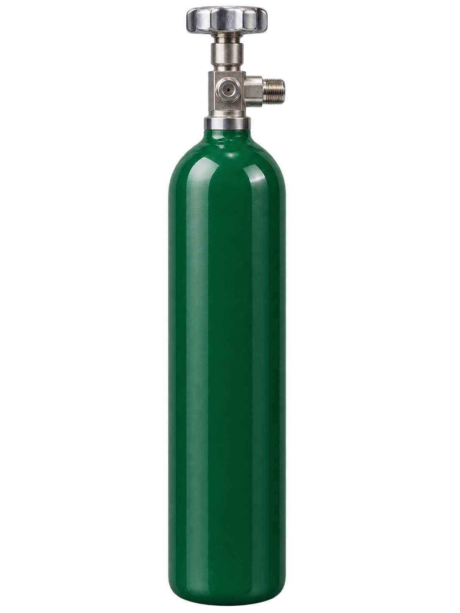
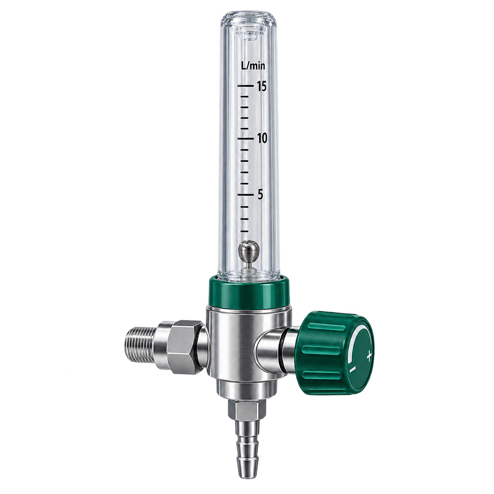
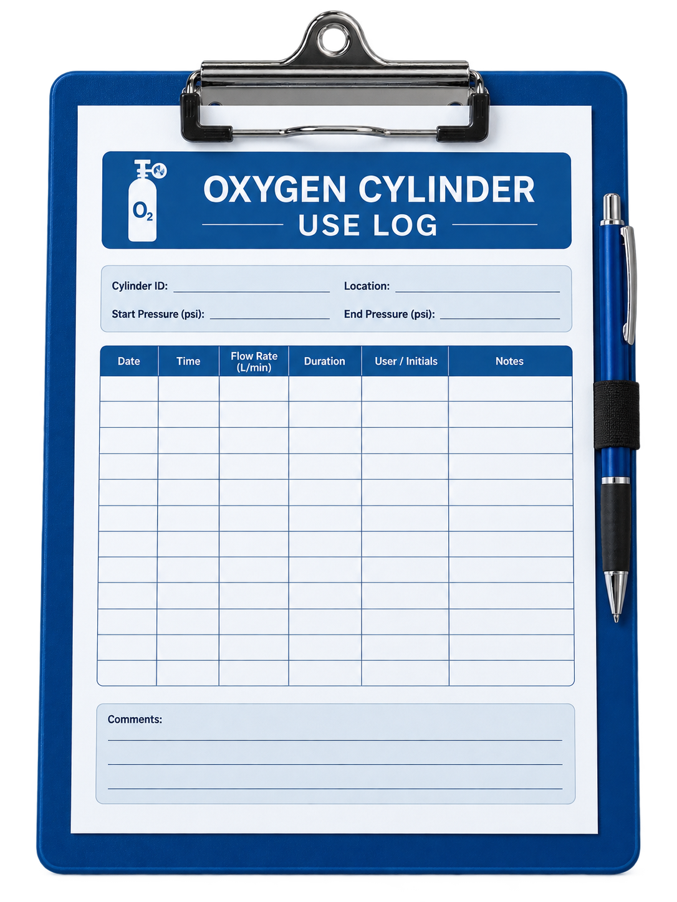

IDENTIFY
Correct Gas + Correct Regulator
Verify cylinder contents by its label and select a compatible regulator or reducing valve before moving forward.
Competency Practice · L-5
Practice safe cylinder transport, regulator setup, leak response, duration-of-flow calculations, oxygen delivery, shutdown, and documentation.
Teach
The competency is a sequence. Secure the cylinder first, inspect and prepare the outlet, connect compatible equipment, check for leaks, confirm enough gas is available, then deliver and shut down safely.
IDENTIFY
Verify cylinder contents by its label and select a compatible regulator or reducing valve before moving forward.
MOVE
Release the storage restraint only when ready to move the cylinder. Place it on a portable carrier or cart, secure it, transport it, and secure it again if removed from the cart.
CONNECT
VERIFY
Open the valve until the pressure gauge stops rising, turn the valve stem back one-half turn, listen for leaks, then calculate duration of flow from the pressure gauge and the correct tank conversion factor.
FINISH
Close the valve, bleed pressure from the regulator, turn the flowmeter off, remove the regulator, replace the safety cap, label and return the cylinder appropriately, discard supplies, remove PPE, perform hand hygiene, and document.
Practice

Select the cylinder and equipment needed to perform the competency safely.
Before using the cylinder, verify its contents according to the cylinder label and color as required by the L-5 competency.
Practice
The competency steps are already in order. Match each hospital scene to the step it illustrates. Drag an image into a drop box, or select an image and then select its destination.
Images are shuffled each time a new scenario begins. Drag or select an image from the left column.
The steps stay in order on the right. Drop the matching image into each step box. The step text remains visible after placement.
Practice
Work through three short setup stages. At each stage, choose what you would do next. Correct actions build the procedure visually instead of requiring one long sortable list.
Practice

Use the regulator image, cylinder size, and tank-size/factor chart to determine how long the oxygen supply will last.
| Cylinder size | Tank factor |
|---|---|
| D | 0.16 |
| E | 0.28 |
| M | 1.56 |
| H/K | 3.14 |
Choose the best response sequence before continuing.
Practice

Practice
Which unexpected outcome occurred during this scenario?
Choose the labeling action that matches the L-5 competency after use.

Select the best documentation statement.
Scenario complete
Next level: